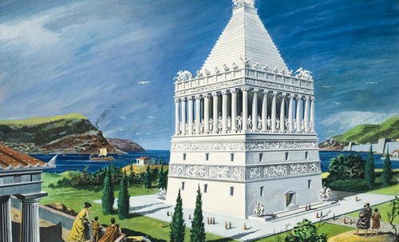

Halikarnaso mauzoliejus – vienas iš septynių pasaulio stebuklų, stovėjęs Mažojoje Azijoje, Halikarnaso mieste (dabar Bodrumas). Mauzoliejų Persų imperijos Karijos provincijos satrapui Mauzolui (valdė 377–353 m. pr. m. e.) po mirties pastatydino jo žmona ir sesuo Artemisija. Statyba buvo baigta 351 m. pr. m. e. Pati Artemisija nesulaukė statybos pabaigos ir mirė vieneriais metais anksčiau. Artemisijos pelenai buvo palaidoti Mauzoliejuje greta Mauzolo. Graikų architektai Satyras ir Pitijas suprojektavo apie 45 m aukščio statinį, kurį sudarė trys pagrindiniai elementai – platforma, antkapis ir stogas. Mauzoliejų pastatė kalvos viršūnėje. Iš pradžių buvo pastatyta didelė platforma, į kurios viršų vedė laiptai, išpuošti akmeniniais liūtais. Platformą supo dievų ir deivių, raitų karių skulptūros – graikų skulptorių Briakso, Leocharo, Skopo ir Timočio darbai. Ant platformos stūksojo pats kvadratinio plano antkapis, pastatytas daugiausiai iš marmuro. Šią statinio dalį puošė reljefai, vaizduojantys graikų mitologijos ir istorijos scenas. Piramidinį stogą puošė kvadriga: keturi žirgai tempia kovos vežimą, kurį valdo Mauzolas ir Artemisija.
© 2021 Matthew